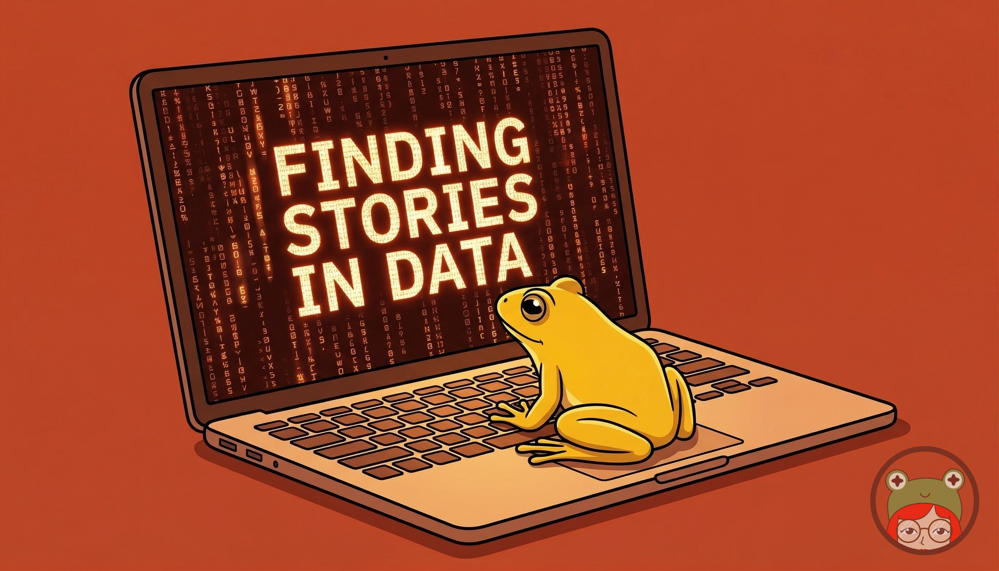

The bias hiding in your AI
Read the words as critically as you read the numbers
by Ada Homolova · May 6, 2026

In our recent Pondcast, we were exploring EU health spending data with Claude Code. We tasked the model to find trends and outliers across 27 countries.
Large language models are good at this. As they are trained on a lot of code, writing for example python for doing fast insights into data, overviews of the columns, finding outliers, missing data and general simple explorative data analysis is a second nature to them. The issues arrive when they take the liberty to interpret the trends.
In our analysis for example, Claude described government-funded healthcare as money coming "out of people's pockets." This triggered Jonathan's reporter instincts.
"That's a strange way of putting it because of course my health spending comes out of my pocket. It's just it comes in taxes, not in a specific insurance. It's a slightly American way of looking at it."
He's right. The model framed it as if government spending is some separate pot, and private spending is the one that really hits you. Later the model said "households shouldering more of the cost" about countries where private health spending was growing. Same framing: public money isn't yours, private spending is the real burden.
It was a prime example of bias inherent to these models and why we should be very careful with any interpretations they offer.
Why this matters
If I had taken that output and dropped it into an article without thinking, I would have published an opinion disguised as analysis. Not my opinion, but the model's. Inherited from its training data, which skews heavily American and English-language.
This isn't just our anecdote. A study in PNAS Nexus tested multiple GPT models against the World Values Survey across dozens of countries and found they consistently default to English-speaking, Western values. A paper in Science Advances showed that the same facts produce different conclusions depending on how they're framed. And it gets weirder: research from July 2025 found that the same model thinks differently depending on what language you prompt it in. Ask in English, get an individualist Anglo-American lens. Ask in Chinese, get a more collectivist one. The worldview shifts with the language. This is an interesting insight into language. But also something to bear in mind when using output of the model for anything.
This doesn't mean AI is useless for data journalism. In the same session, Claude spotted something it identified as "Cyprus's healthcare restructuring", flagged bigger expenditures on health systems in newer EU members, and found that there is not much correlation between how much a country spends on the health care and life expectancy. Those are potential leads I should at least explore (and test!) for further research if I want to. It gave our initial analysis a kickstart, but the thinking is still for me to do.
This process is collaboration, rather than delegation. These models are really eager to please, so we need to be careful about framing. If we tell it 'give me a story' it will make its utter best to create a story out of nothing and confidently state that that is the story. And when it frames that story, it brings biases that are not always immediately recognizable as such.
The takeaway
Use AI to explore data. Let it surface patterns and perspectives. But read the words as critically as you'd read the numbers. Even the interpretation of statistics is susceptible to bias. Where we once only had to question our own assumptions, we now also need to stay alert to the model's. And that's not just a risk, but I believe also an opportunity: as it makes those biases visible, it can push us to think more consciously about them.
📒 See the notebook Claude created, zoomed in on health expenditures in EU countries
🐸 Want to practice this kind of critical AI + data workflow? Join The Pond — we do live sessions like this twice a month.